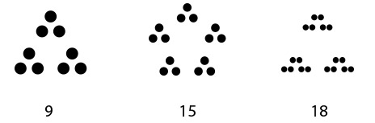
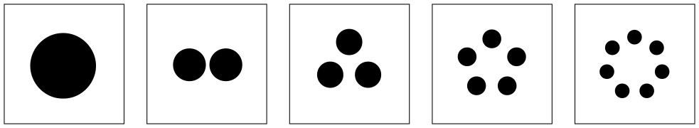
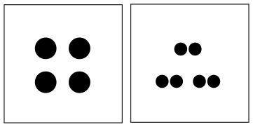

Many have discovered Brent Yorgey’s very cool factorization diagrams. They seem like a great way to teach multiplication and factorization to children.
We also were excited by the domino game suggested by Malke Rosenfeld on her blog and decided to try to take her ideas and see if we could create viable game that also would be a fun way to think about factors and primes. To this end we brought together a math geek, a visual artist and a 6 year old ninja and started playing. Through trial and error we arrived at a set of rules.
Simple version of the rules:
Start by printing out a deck of cards. (We have attached a pdf to this post with numbers up to 24 that can be printed on card stock and cut up.)
Each player gets 6 cards. One card is turned face up in the middle. The first player tries to match the turned up card, following the match rules below. After that, players can choose to match the card at either end of the growing chain. If you can’t match then you draw another card. First person to run out of cards wins.
The whole game comes down to the matching rules:
– The number 1 matches anything
– The number 2 matches any even number
– Primes match primes (or as you can explain to a child: circles match circles)
– Other numbers have a major and minor group. For instance 9 has a major group of 3 and a minor group of 3. 15 has a
major group of 5 and a minor group of 3. 18 has a major group of 3 and a minor group of 6.

You can match based on major or minor group. If the card you want to play has the same major group or same minor group as the card to be matched, then you can play it. So 10 can match 15 (major group of 5 matches), and 9 can match 15 (minor group of 3 matches). A prime number can match either the minor or the major group, thus 5 can match 10 (major group), but 3 can match 15 (minor group).
Beyond the simple rules:
We started to think about a rule set that might work if you had numbers higher than 24.
Types of number visualizations:
Primes are represented as circles.
Here are the types of Minor Groups:
Simple Minor groups are low primes:
1, 2, 3, 5, 7

Compounded minor groups:
4 (2×2), 6 (3×2)

Doubly compounded minor groups:
8 (2x2x2), 9 (3x3x3), 16 (4x4x4), 18 (2x3x3)
Triple compounded minor groups:
24 (2x2x2x3), etc.
Major groups
A major group is a combination of N copies of one of these minor or compounded groups.
So here are the generalized matching rules:
– 1 matches anything
– 2 matches any even number
– Minor group types can be matched with each other within types, but not across.
– Major groups can be matched if they have an equal number of elements. For that, minor group types do not have to
match.
Attachment:
Here is the pdf you can print out on card stock to make your own set of cards:
 Constrain Face Detection for Better Face Recognition
Constrain Face Detection for Better Face Recognition